This part of the documentation describes the sensors interface. With sensors we mean devices that are physically connected/attached to the Raspberry to one of the GPIO pins. So they are connected with a physical wire. Sensors typically are temperature/humidity interfaces or energy sensors.
What makes sensors different from the "normal" receivers: The latter operate asynchronously and begin to send as they like it. The connected wire sensors will only start once they receive a command over the line from the MCU (Micro Controlling Unit aka Raspberry).
For the sake of simplicity, I like to categorize wired sensors in the following groups:
What Sensors are supported:
The DHT11 temperature/humidity sensor is a typical example of such a sensor device. It has 3 outside connector pins: GND, VCC and Data. Of course the latter will be the most important pin to work with. In case of the DHT11 we need to send a start pulse to the data pin, wait a predefined number of micro seconds and then we will receive the 40-bit (5 bytes) sensor reading from the device as 2 bytes humidity reading, 2 bytes temperature reading. And 1 byte for parity check.
Connecting the DHT11 is easy, it is low cost and easy to connect. However, you are advised to buy the slightly more expensive DHT22 model instead. The DHT11 does not output decimal parts of the temperature and humidity (decimal part of the output bytes are always 0). The DHT22 is fully compatible with the DHT11 but will provide temperature readings with 0.1 degree Celsius precision.
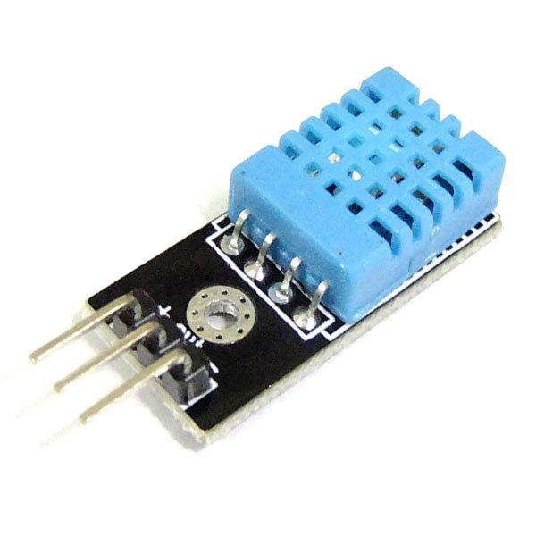
The DHT11 is not compatible with the Dallas 1-wire bus protocol (see below) which makes it a less flexible choice, even with its low pricetag.
Writing a software program to read the temperature and humidity values from a sensor is a relatively simple task. In case of the DHT11 one needs to send a pulse sequence over the data pin which tells the sensor to send its data, wait a predefined number of microseconds and the sensor will take over the data line and starts sending its 40 bits of data.
In principle, all you have to do is read the status of the data line in uSec time intervals and as soon as the data line switches from high to low, or vice versa, note the pulse time. Every bit transmitted starts with 50uSecs High value followed by a pulse of 25 uSec means a 0 value or a pulse of around 70 uSecs which means a logical 1.
There are a few methods for reading one-wire sensors:
The first method described above is a brute-force method: we read the value/level of the data pin every uSec in loop and as soon as the sensor changes state/value we record the time interval since the last state change. This might consume an undesired amount of CPU resources. But there is a more important reason why the simple read might not work: If you use other sensors or wireless devices that use interrupt handlers to read incoming messages, your reads will not be timed correctly as these interrupts are handled with a higher priority than other running processes.
As an alternative, it is possible to use an interrupt handler to measure and time signal transitions on the data pin. The time difference between 2 transitions will be an indicator of “0” or “1” values. My experience with the last method is mixed: The method works much better when there is a lot of other data to read. But the timing of the data line is still critical and the sensor pulses are really short, even for the RaspberryPI. Especially when other interrupts arrive (433 MHz data for example) it is possible that a transition is not noticed and timing of two pulses is combined (and there is one pulse time less in the buffer).
Of course it is possible to NOT connect any 433MHz receivers to the Raspberry, in which case a single sensor can be read quite reliably. However, in our Home Automation application 433MHz receivers are key. And sad-but-true, there is a HUGE amount of 433 MHz noise in and around the home which causes lots of meaningless interrupts to the application. There are good and better (more selective) receivers, and some have developed a low-pass filter for 433MHz receivers. However, when weather station start with theirs 60-second data bursts the amount of interrupts on the receiver pin is enormous (leading to 20-30% cpu usage).
The third method is easy on the programmer. There are two functions available in the wiringPI dev library that support the Max functions: readRHT03() and maxDetectRead().
I did some tests to measure the performance of the three methods. I tested method 2 and 3 in two ways: (a) Without any other (major) load on the RPI, and (b) with the LamPI-receiver process running, so that all other 433MHz receiver interrupts needed to be dealt with as well.
For every method tested I made sure that we raised the interrupt priority prior to reading a value, and dropped it to 0 again after an successful read. This is done as reading a sensor is a synchronous operation (as seen by the initiating LamPI daemon) and we wait it to be successful and as short as possible (time). Compared to 433MHz interrupts that are generated by the receiver as a result of a remote sending a value. These asynchronous and autonome transmissions are handled by the daemon and if we miss one of those we'll pick up the next transmission.
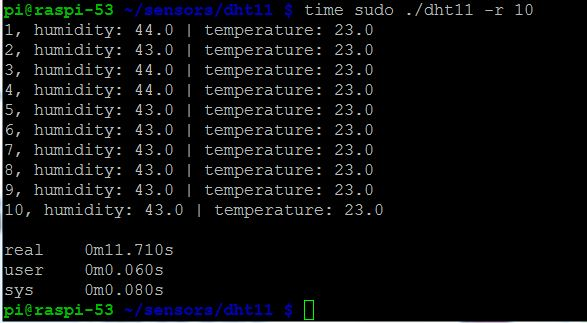
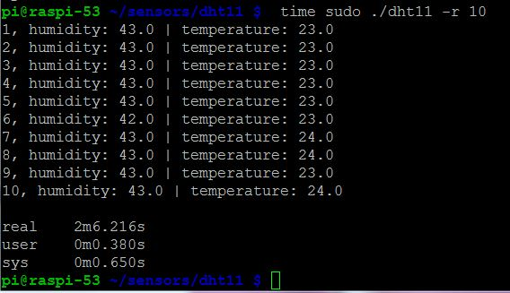
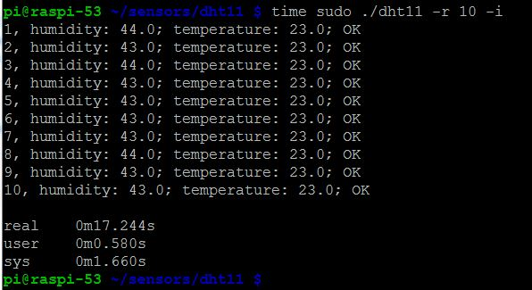
As you can see in the results above, an average successful read in a system without load takes about 3 seconds (including a 500 ms start delay between read attempts and some other short wait times)
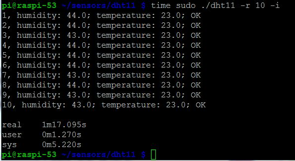
The figure above tells us that for reading 10 successful values we have a total elapsed time of 1 minute and 17 seconds, which means that a successful read takes 7.7 second on average. Still this figure is a little misleading: Not every read attempt is successful, and in the program we wait 500 milliseconds between attempts. This is because the datasheet mentions a mandatory time delay of about 1 second between read attempts. It is possible to leave out his wait, this will cause no major problems, other than that reads become less accurate (probably because the sensor cannot auto adjust between read attempts).
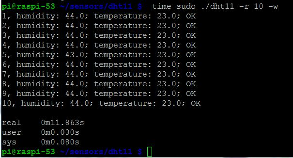
As you can see, the built-in function in the wiringPi library is highly efficient in an unloaded sitution.
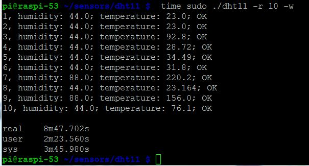
And the built-in function is very much inefficient if the system is handling regular 433MHz receiver interrupts. Also errors are introduced (even with checksum) that make its results unreliable. In practice this means that the wiringPi library function has to redo an enormous amount of read attempts that do not pass the checksum test.
For reasons described above, a one-wire interface may not always be the best solution for connecting sensors. Timing issues are already an issue when having one sensor connected to one GPIO pin, let alone when we would like to have multiple sensors connected to our Raspberry.
Therefore, I will experiment with other 1-wire and 2-wire sensor bus interconnects (read more below).
The third method described uses a 1-wire module interface to retrieve the values from a slave device. This interface is called MicroLAN and has been defined by Dallas Semiconductors. Users can access sensor values by reading the value of the slave device in the /sys/bus/w1/device directory. Standard modules w1-gpio and w1-therm then will control the low-level details of the communication. And we can open a device in the /sys/bus/w1/device directory and read the values from there. The DS18B20 temperature sensor is an example of a 1-wire capable sensor device compatible with the Dallas/MicroLAN specification.
The MicroLAN bus is slower than the 2-wire I2C bus, but as a result it can be (much) longer. Sources on internet specify a length of 100 meters or more (over CAT 5e Ethernet cable).
I bought 5 DS18B20 temperature sensors for LamPI environment and plan to make a small MicroLAN network with them.
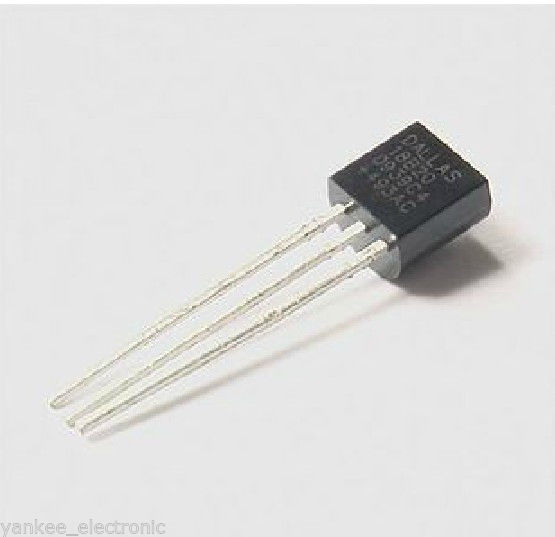
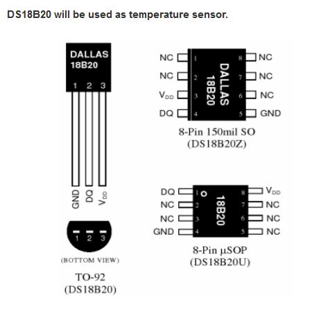
These sensors look just like a transistor which makes them relatively easy to work with. In the picture you see the cheap standard version. High temperature and water resistant versions are available as well.
Resources
Load both modules with the modprobe command:
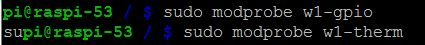
After the modules are loaded it is easy to read the value of the sensors. Go to the /sys/bus/w1/devices directory and list the directories and files. Apart from the w1_bus_master command there will be one or more other directories, one for every device on the bus.
For the ds18b20 sensor, the directory name will start with 28- . Go to one of the ds18b20 directorys and use the following command to read the current termperature at the sensor:
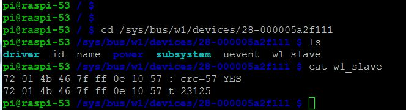
Both modules w1-therm and w1-gpio need to be loaded prior to their usage. By default, GPIO pin 4 (P1 connector 7) is used.
A completely different way of connecting temperature, humidity and lots of other sensors to the Raspberry PI is by using I2C compatible sensors like the AM2321. I2C is a software/hardware bus to connect several devices to the same GPIO pins and still control each one of them. This sharing of Raspberry resources offers important benefits:
The I2C bus is wired as follows, a device needs 4 wires as a minimum as shown in the diagram below. However, some devices have several other pins to control bus addressing and interrupts for example.
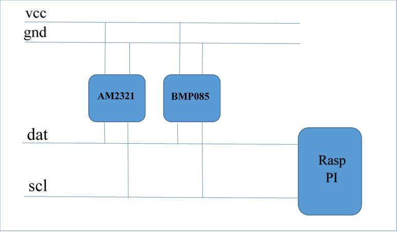
In the picture above, scl is the system clock (pin xxx) and dat is the data pin (pin yyy).
The wiringPI library offers support for reading the I2C bus.
The following (not so expensive) sensors are available for connection to the LamPI system.
The LM75 is a cheap example of an I2C capable sensor. Several people have connected this sensor to the Raspberry and achieved promising results.
As you can see in the picture, soldering these small IC’s is a challenge.
Another interesting sensors available on the I2C bus is the barometric pressure sensor. It can be bought on eBay with free shipping for as low as $ 6.00. Next to the barometric pressure it can also measure the temperature.
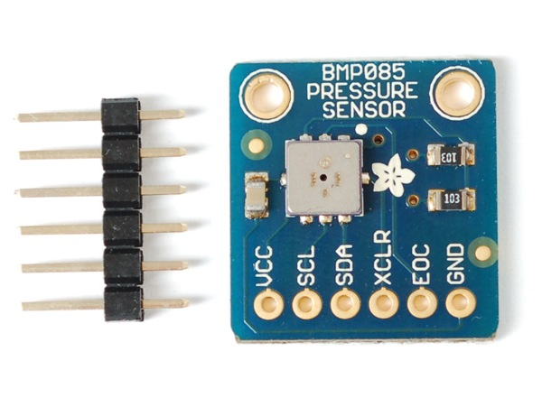
By the year 2018, all Dutch homes will have a "smart" meter for electricity and heating with natural gas. The so-called P1 port on the electricity meter offers access to the electricity and gas usage over its serial line interface.
The P1 port is accessible by home owners and allows them to read power usage and natural gas usage on a permanent basis.